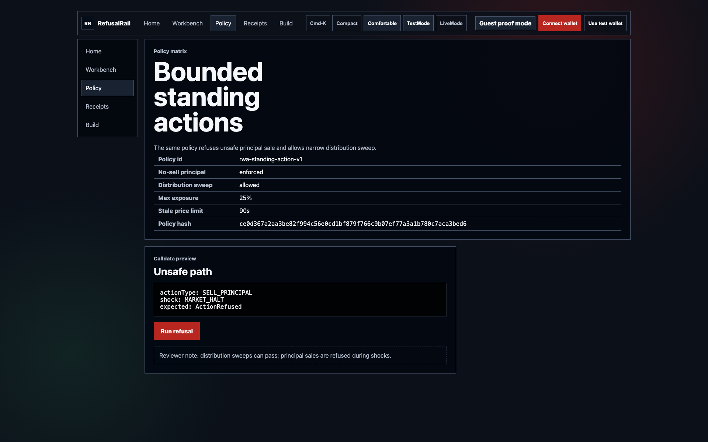

Judge claim
The winning action is the trade that never executes.
RefusalRail turns a blocked RWA agent action into a durable receipt with wallet identity and chain evidence.
Rejected action
Receipt saved
Arbitrum Sepolia path

Why refusal matters
RWA agents need a brake that creates evidence.
The agent may claim a distribution or sweep proceeds. During a market halt, it must not sell principal while the holder is offline.
Judge path
Connect wallet. Pick shock. Open receipt.
The funded Arbitrum Sepolia test wallet ends in 5c66, and that identity lands in the receipt.

Wallet path
RainbowKit for real wallets, test wallet for judges.
The wallet state follows the judge from home into the workbench, so the proof never loses its execution identity.
The failing trade becomes the success state.
MARKET_HALT is selected. The agent attempts a principal sale. Policy refuses it and writes the receipt.
Live demo plate: wallet identity, shock selection, refusal, receipt creation.
Receipt detail
The NO is inspectable after refresh.
Policy hash, calldata hash, shock hash, proof hash, wallet address, and chain status stay on the detail page.
Audit surface: the refused action is now a durable record.
Chain proof path
The receipt prepares RefusalHub calldata and binds explorer proof back to the same record.
0x3540...0Cf80xa9df...23B70x0b80...b372Policy contrast
Safety is not a blanket block.
The same policy can refuse an unsafe principal sale and allow a narrow distribution sweep. The product records both outcomes.

Auditor view
The receipt rail outlives one browser run.
Mechanism
Agent proposes. Policy decides. Receipt proves.
Judge route
Open the live app and inspect the refusal.
Run the shock, open the receipt, prepare chain data, inspect the contracts, and read the deployment notes. The public page, README, and app all point to this path.


RefusalRail
Testnet safety rail for agentic RWA actions. No real securities, no brokerage integration, no price prediction.
https://refusalrail.veithly.workers.dev